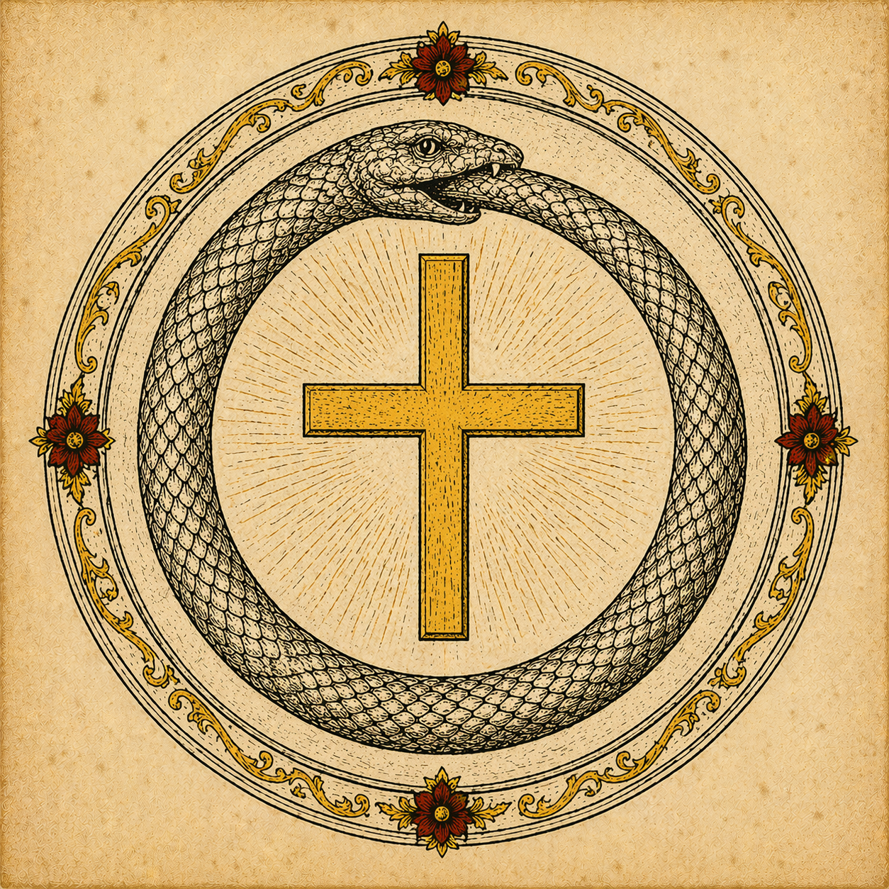

Ora et Labora et Lege
Aurum Cordis
The Opus Magnum as Christian Way:
Alchemy, Theology, and the Soul's Transformation

Ora et Labora et Lege
The Opus Magnum as Christian Way:
Alchemy, Theology, and the Soul's Transformation
"The stone that is not a stone, cheap yet priceless, known to all yet found by few — this is the beginning and the end of the work."
Rosarium Philosophorum
Aurum Cordis — "The Gold of the Heart" — is a scholarly exploration of medieval alchemical thought read through the lens of orthodox Trinitarian Christianity and Jungian depth psychology. It asks a deceptively simple question: what do the alchemists actually mean?
Medieval and Renaissance alchemy was never simply about turning lead into gold. Its practitioners knew this. Their cryptic language — Prima Materia, Nigredo, the Philosopher's Stone — described processes in matter that they believed mirrored processes in the soul. The laboratory was a theatre of spiritual transformation. The Opus Magnum (the Great Work) was simultaneously metallurgical, psychological, and theological.
This site approaches that tradition with two guiding convictions. First, that Christian theology — especially its doctrines of creation, Incarnation, and sanctification — provides the most illuminating interpretive key for what the alchemists were reaching toward. Second, that C.G. Jung's recovery of alchemical symbolism as a map of the unconscious, while not the last word, is a genuinely valuable instrument of pastoral and spiritual understanding.
Neither conviction cancels the other. Jung's depth psychology is taken seriously on its own terms and then situated within a larger Christian account of the soul, grace, and the economy of salvation. Alchemy is treated neither apologetically (as if it were secretly orthodox all along) nor reductively (as if it were merely projection). It is taken seriously as a symbolic tradition with its own internal coherence — and then read, stage by stage, alongside Scripture, the Fathers, and the mystics.
The result is neither a defence of occultism nor a dismissal of it, but a patient act of lectio — a slow, charitable reading of a strange and beautiful tradition in the light of the faith that, this site argues, gives it its deepest meaning.
The approach is neither apologetic nor reductive. Alchemy is not defended as secretly orthodox from the start — many alchemists were heterodox, syncretic, and confused. Nor is it dismissed as mere charlatanry — many were devoted Christian practitioners whose symbolic vision of matter illuminates Scripture and the Fathers in ways that centuries of exegetical tradition have largely overlooked. The method is discernment: patient, generous, and finally judged by the ancient rule — quidquid est verum, quidquid honestum — whatever is true, whatever is noble, take it in (Philippians 4:8).
"That which is below is like that which is above, and that which is above is like that which is below — to accomplish the miracle of the one thing."
The Emerald Tablet · Tabula Smaragdina · c. 8th century
The site holds three lenses in dialogue — no single one is sufficient alone
The First Lens
Alchemy is taken seriously on its own terms — as a genuine symbolic tradition with its own internal coherence, vocabulary, and vision of matter as spiritually significant. The primary texts are read closely: the Emerald Tablet, the Rosarium Philosophorum, Paracelsus, Zosimos. The symbols are not decoded away but inhabited.
The Second Lens
Orthodox Trinitarian Christianity provides the interpretive frame. The doctrines of creatio bona, Incarnation, the Paschal Mystery, and theosis illuminate what the alchemists were reaching toward. Scripture, the Fathers, and the mystics — Origen, John of the Cross, Aquinas, Bulgakov — are the theological interlocutors throughout.
The Third Lens
Jung's recovery of alchemical symbolism as a map of the unconscious is taken seriously as a valuable pastoral instrument — while not being given the last word. Where depth psychology illuminates the inner dimensions of the Christian tradition, it is welcomed. Where it oversteps into theology, it is corrected. Victor White OP shows the way.
Select any stage to begin
The Unformed Substrate
The undifferentiated first substance — chaos before creation, shadow before light, the soul before grace.
The Classical Quaternary
Earth, Water, Air, Fire — and the hidden Quinta Essentia that unifies them: Christ as cosmic ordering principle.
Sulphur, Mercury, Salt
Paracelsus's three principles — soul, spirit, body — read as a Trinitarian analogy.
Stage I — The Black Phase
Putrefaction, death, the dark night of the soul. Good Friday. The Shadow confronted.
Stage II — The White Phase
Washing, purification, the dawn of new light. Easter morning. The Anima restored.
Stage III — The Yellow Phase
The lost stage. Solar wisdom dawning. Sophia. The threshold before fullness.
Stage IV — The Red Phase
Solar perfection, the coniunctio. Pentecost. Theosis. The Wedding of the Lamb.
Lapis Philosophorum
The Stone that is not a stone. Christ as Lapis. Grace as universal tincture.
Planetary Rulers
Lead to Gold: the planetary ladder of transformation and Dante's Paradiso.
The Great Work — Full Map
Unified overview: alchemy, salvation history, and Jungian individuation in parallel.
Depth Psychology & Faith
Where Jung converges with Christian theology — and where they part ways. Victor White OP.
Sources & Further Reading
Primary alchemical sources, Christian theology, Jung, and integrative scholarship.
Appendix B — Searchable Index
Search every alchemical term by theological correlate, scripture reference, or Jungian concept. Filter across the full corpus in one view.